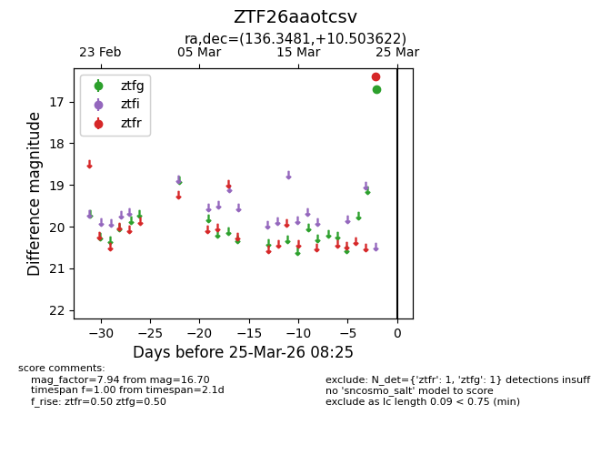
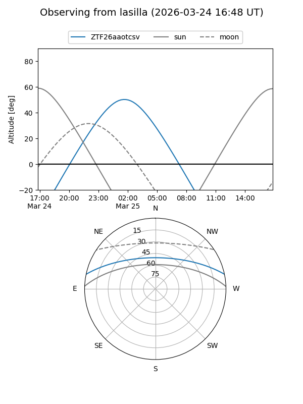
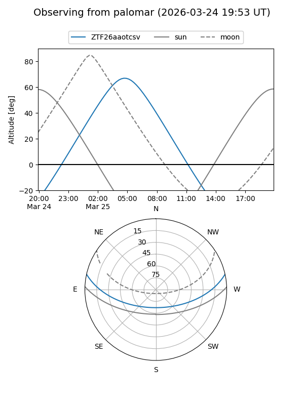

ZTF26aaotcsv
Target ZTF26aaotcsv at 2026-03-25 08:27
Aliases and brokers:
FINK: link
Lasair: link
ALeRCE: link
alt names
ZTF26aaotcsv (ztf,fink_ztf)
Coordinates:
equatorial (ra, dec) = 136.3481,+10.50362
equatorial (HMS+DMS) = 09:05:23.55,+10:30:13.04
galactic (l, b) = (218.8595,+34.46944)
Flags:
Photometry:
last ztfg=16.70, ztfr=16.40
1 ztfg, 1 ztfr detections
Lightcurve

Visibility


Additional plots